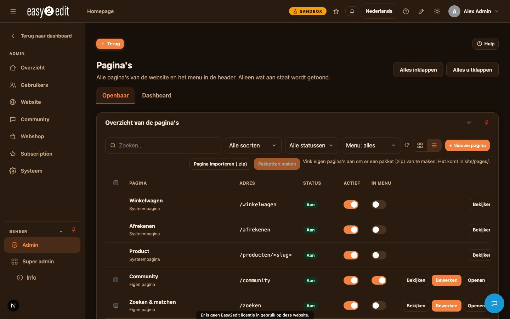
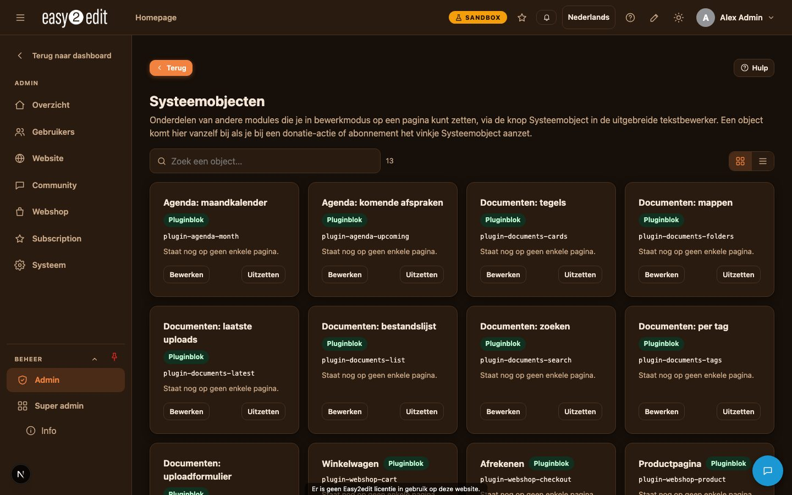

3. Pagina's, menu en bewerkmodus
Dit hoofdstuk legt uit hoe pagina's en het menu zijn georganiseerd in easy2edit, en hoe je met de bewerkmodus pagina's direct op het scherm kunt bouwen en aanpassen.
Video: Pagina's en bewerkmodus (Nederlandse voice-over ook in English)

Overzicht van pagina's en menu#
Alle pagina's en menu-items beheer je onder Admin > Pagina's. Hier vind je drie soorten items:
- Systeempagina's: ingebouwde pagina's zoals Home en producten.
- Eigen pagina's: tekstpagina's die te vinden zijn op een adres zoals /p/<key>.
- Koppelingen en menu-items: items die naar elders verwijzen of het menu zelf structureren.

Pagina-instellingen#
Elke pagina heeft zijn eigen instellingen die bepalen hoe de pagina eruitziet, wie hem kan zien en hoe hij zich gedraagt in het menu.
- Namen per taal: je kunt voor elke taal een andere naam instellen, en met AI-vertaling de andere talen automatisch laten invullen.
- Adres per taal: het webadres van de pagina kan ook per taal verschillen.
- Zichtbaarheid: kies wie de pagina mag zien - iedereen, ingelogde gebruikers, alleen gasten, of specifieke gebruikers of groepen.
- Zichtbaarheid in menu: bepaal of de pagina getoond wordt in het hoofdmenu.
- Openen in nieuw tabblad: kies of de pagina in hetzelfde tabblad of in een nieuw tabblad opent wanneer erop geklikt wordt.
- Apparaten: bepaal of de pagina getoond wordt op desktop, tablet, mobiel, of een combinatie daarvan.
- Paginaspecifiek thema/header/footer: een pagina kan een eigen thema, header of footer gebruiken in plaats van de standaardinstelling voor de hele site.
- SEO per taal: stel SEO-gegevens apart in voor elke taal.
- Achtergrond: voeg een achtergrondafbeelding of -video toe aan de pagina.
Bewerkmodus inschakelen#
Om een pagina direct op het scherm te bewerken, schakel je het potloodicoon in de header in. Dit activeert de bewerkmodus, die bewerkingstools over de live pagina heen legt.
Hoe pagina's zijn opgebouwd: rijen, cellen en items#
In de bewerkmodus worden pagina's opgebouwd uit rijen, die fungeren als horizontale blokken die op de pagina worden gestapeld.
- Elke rij kan worden onderverdeeld in cellen, van 1 tot 4 kolommen breed.
- Elke cel bevat een of meer items, die je toevoegt via + Toevoegen.
Beschikbare items zijn onder andere:
- Kop
- Tekst (rich text-bewerking)
- Afbeelding
- Knop
- Spacer
- Lijn
- Systeemobjecten
- Kant-en-klare onderdelen: contactgegevens, social media, kaart, video, citaat, cijfers, logo, openingstijden
- HTML / CSS-code
Rij-instellingen#
Klik op het tandwielicoon in de hoek van een rij om de instellingen te openen. Van hieruit kun je het volgende aanpassen:
- Achtergrondkleur, -afbeelding of -video
- Overlay
- Padding
- Breedte: kolom, breed of volledig scherm
- Hero-hoogte
- Tekstkleur
- Ronde hoeken
- Ruimte boven de rij
Cel-instellingen#
Elke cel binnen een rij heeft zijn eigen instellingen:
- Breedte
- Uitlijning
- Kaartstijl: achtergrond, rand, radius en schaduw
Tekst- en knopinstellingen#
Tekstitems kunnen afzonderlijk worden gestyled:
- Stijl, formaat, kleur en lettertype
- Padding
- Achtergrond, getoond als label of pil
Knoppen hebben hun eigen set opties:
- Label per taal
- Koppeling
- Stijl: primair, outline of ghost
- Kleuren
- Formaat
- Pictogram
Het HTML / CSS-code-onderdeel#
Voor geavanceerde aanpassingen opent het HTML / CSS-code-item een groot pop-upvenster met drie tabbladen: Visueel, HTML en CSS.
- In het tabblad Visueel klik je direct in de tekst en typ je, waarbij je het resultaat precies ziet zoals het eruit komt te zien (what you see is what you get). Een werkbalk biedt vet, cursief, onderstrepen, lijst, koppelen en opmaak wissen, plus een schakelaar tussen een lichte en donkere achtergrond voor het bewerkgebied.
- In het tabblad HTML bewerk je de onderliggende markup rechtstreeks.
- In het tabblad CSS voeg je je eigen stijlen toe.
De code die je toevoegt, draait binnen een sandboxed frame, wat betekent dat deze geen rechten heeft op de rest van de site. Dit houdt je pagina's veilig, zelfs wanneer er aangepaste code wordt gebruikt.
Systeemobjecten#
Systeemobjecten zijn modulaire onderdelen, zoals donatieknoppen, abonnementen, media-overzichten, plugin-onderdelen en, voor superadmins, AI-dashboardblokken. Voordat je ze kunt gebruiken, moet de betreffende module worden ingeschakeld onder Admin > Systeemobjecten.
Zodra dit is ingeschakeld, kun je een systeemobject in een pagina plaatsen terwijl je in de bewerkmodus bent, via + Toevoegen > Systeemobjecten.
Pagina's bewerken die zijn geïmporteerd vanuit HTML#
Pagina's die 1-op-1 zijn overgenomen uit een HTML-bestand, zoals beschreven bij het site-importproces, gedragen zich in de bewerkmodus iets anders. Elke tekst en knop op zo'n pagina toont een potloodicoon.
- Klik op het potlood bij de tekst of knop die je wilt wijzigen.
- Er opent een editor die de tekst toont zoals die op de pagina verschijnt, met opmaakopties voor vet, cursief, onderstrepen en koppelen. Bij knoppen kun je ook de koppeling bewerken.
- Klik op Opslaan om je wijzigingen terug te schrijven naar de pagina.
Op deze manier kun je geïmporteerde HTML-pagina's veilig bijwerken zonder de onderliggende code rechtstreeks te hoeven bewerken.